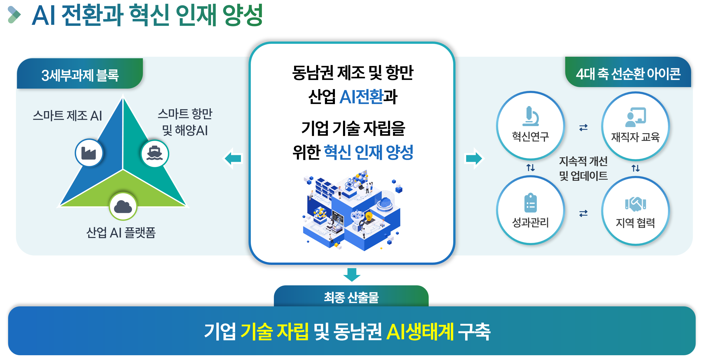
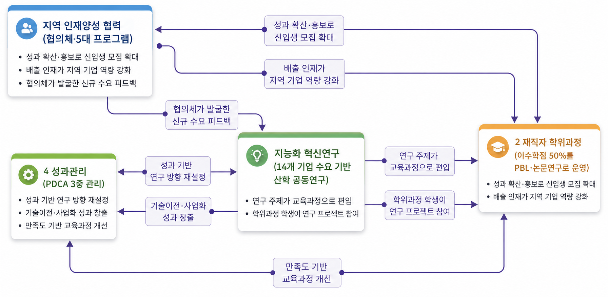
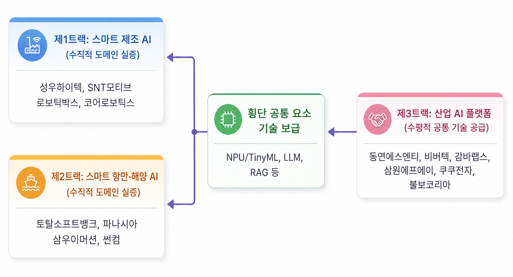

비전 및 사업안내
비전
동남권 제조·항만 산업의 AI 전환과 기업 기술 자립을 위한 혁신 인재 양성
부산대학교 동남권AI혁신연구센터는 과학기술정보통신부와 정보통신기획평가원(IITP)이 지원하는 지역지능화혁신인재양성 사업을 수행하는 핵심 거점 연구센터입니다. 지역 기업이 외부에 의존하지 않고 스스로 AI 기술을 개발·운영할 수 있는 역량을 갖추도록, 산학 공동연구와 재직자 학위과정, 지역 인재양성 협력을 하나의 체계로 연결해 운영합니다.

지역지능화혁신인재양성(부산대학교) 사업 개요
| 주관기관 | 부산대학교 산학협력단 |
|---|---|
| 연구책임자 | 백윤주 교수 (동남권AI혁신연구센터장) |
| 사업기간 | 2026. 8. 1. ~ 2033. 12. 31. |
| 총 사업비 | 180억원 |
| 참여기업 | 14개사 (중견 6 · 중소 8) |
| 참여교수 | 17명 |
3대 목표
| ① 혁신연구 | 14개 참여기업의 AI 기술 자립을 달성하고, 동남권 제조·항만·해양 산업의 AI 전환을 가속화합니다. |
|---|---|
| ② 재직자 학위과정 | 동남권 기업 재직자의 AI 역량을 강화합니다. 24학점 3트랙의 프로젝트 중심 석사과정을 운영합니다. |
| ③ 지역 인재양성 협력 | 기업·대학·지방자치단체가 함께하는 인재 순환 생태계를 구축합니다. 협의체와 5대 프로그램을 운영합니다. |
세 가지 목표는 연구 → 교육 → 협력 → 성과가 서로 환류하는 선순환 구조로 운영되며, 전주기 성과관리 체계가 이를 뒷받침합니다.

연구 체계 — 3개 트랙
| 트랙 | 명칭 | 대상 |
|---|---|---|
| 트랙1 | 스마트 제조 AI | 동남권 제조 현장의 AI 전환 |
| 트랙2 | 스마트 항만·해양 AI | 부산 항만·해양 산업의 AI 전환 |
| 트랙3 | 산업 AI 플랫폼 | 트랙1·2에 공통 기반 기술 공급 |
트랙1·2는 산업 현장의 문제를 다루고, 트랙3은 여기에 공통으로 쓰이는 기반 기술을 공급하는 구조입니다.
